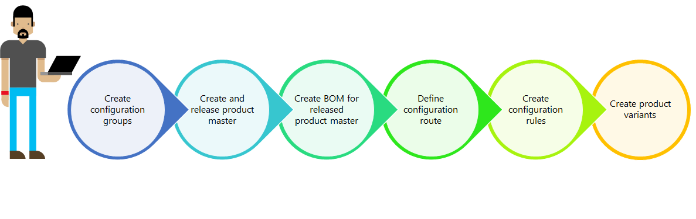

Dimensionsbasierte Produktkonfigurationen – Übersicht
Important
Dynamics 365 for Finance and Operations hat sich zu speziell entwickelten Anwendungen entwickelt, mit denen Sie bestimmte Geschäftsfunktionen verwalten können. Weitere Informationen zu diesen Änderungen finden Sie im Dynamics 365-Lizenzierungshandbuch.
Die dimensionenbasierte Produktkonfiguration stellt eine einfache Lösung für das Erstellen vieler Produktvarianten aus einem einzigen Produktmaster und seiner Stückliste dar.
Die dimensionbasierte Produktkonfiguration ist eine von drei integrierten Produktkonfigurationstechnologien. Die beiden anderen Technologien sind vordefinierte Varianten und die einschränkungsbasierte Konfiguration. Alle drei Technologien verwenden einen Produktmaster als Ausgangspunkt und ermöglichen dem Benutzer, viele Produktvarianten für einen Produktmaster zu erstellen.
Schlüsselkonzepte
Die dimensionbasierte Produktkonfiguration basiert auf den folgenden Schlüsselkonzepten:
- Produktmaster
- Konfigurationsproduktdimension
- Variantengruppen
- Stücklisten
- Variantenarbeitsplan
- Variantenregeln
Produktmaster
Ein Produktmaster ist der Ausgangspunkt für jeden Produktkonfigurationsprozess. Für die dimensionsbasierte Produktkonfiguration benötigen Sie einen Produktmaster mit eben dieser Konfigurationstechnologie und eine Produktdimensionsgruppe, die die Produktdimension der Konfiguration umfasst.
Konfigurationsproduktdimension
Die Produktdimension der Konfiguration wird dazu verwendet, die Produktvarianten für einen Produktmaster mithilfe der dimensionsbasierten Konfigurationstechnologie zu identifizieren. Der Konfigurationsdimensionswert wird vom Benutzer eingegeben und sollte helfen, die einzelnen Produktvarianten zu identifizieren.
Variantengruppen
Variantengruppen werden in einem zentralen Repository definiert und können für alle dimensionsbasierten Produktkonfigurationsmodelle verwendet werden. Variantengruppen werden den einzelnen Stücklistenpositionen zugeordnet und halten eine Gruppe von Positionen zusammen, die sich gegenseitig ausschließen. Das bedeutet, dass lediglich eine Position in einer Gruppe für eine einzelne Produktvariante ausgewählt werden kann.
Stücklisten
Die Stückliste stellt die Bausteine für eine dimensionsbasierte Produktkonfiguration dar. Sie muss alle verschiedenen Produkte enthalten, die in einer beliebigen Produktvariante verwendet werden können. Jede Position in der Stückliste kann auf eine Variantengruppe verweisen. Wenn eine Position nicht auf eine Variantengruppe verweist, wird sie in alle Produktvarianten einbezogen.
Variantenarbeitsplan
Der Variantenarbeitsplan bestimmt die Reihenfolge der Variantengruppen, also wie diese dem Benutzer während des Produktkonfigurationsprozesses angezeigt werden.
Variantenregeln
Die Variantenregeln helfen sicherzustellen, dass ein Produkt, das in einer Variantengruppe in einer Stückliste enthalten ist, entweder eine Einbeziehung oder einen Ausschluss eines Produkts in einer anderen Variantengruppe in der gleichen Stückliste erzwingt.
Produktmodellprozess
Die natürliche Reihenfolge bei der Erstellung eines Produktmodells für ein dimensionsbasiertes Produkt beginnt mit dem Definieren der relevanten Variantengruppen. Es muss sichergestellt werden, dass alle Produkte, die in der Stückliste verwendet werden, für das Unternehmen freigegeben wurden, für das dieses Produktmodell erstellt wird. Mithilfe dieser Bausteine an vorhandenen Reservierungen für kann er die Stückliste erstellen und Variantengruppen zu den entsprechenden Stücklistenpositionen zuweisen. Wird in der Stückliste abgeschlossen ist, kann ein Variantenarbeitsplan für die Einrichtungen der Variantengruppen in der korrekten Reihenfolge definiert werden.  Wenn es bestimmte Produkte von Gruppen die unterschiedliche Konfigurationsanforderungen gibt, die entweder nicht zusammen eingesetzt werden muss oder darf, Variantenregeln erstellen, können Sie die Produktbeziehungen diese erzwingen. Nachdem die Stückliste durch eine Stücklistenversion an einen dimensionsbasierten Produktmaster gebunden wurde und beide genehmigt und aktiviert wurden, können Sie Produktkonfigurationen erstellen und Namen für die einzelnen Konfigurationen eingeben. Die Konfigurationen können definiert werden, bevor eine Buchung generiert wird, oder sie werden definiert, wenn eine bestimmte Konfiguration erforderlich wird.
{kind=link}
Verwendungsempfehlung
Die Technologie der dimensionsbasierten Konfiguration eignet sich insbesondere für Produkte mit begrenzter Variabilität, wenn die Kombination der Standardproduktdimensionen Größe, Farbe, Format und Konfiguration nicht für die Identifikation einer bestimmten Produktvariante geeignet ist. Ein Beispiel wäre ein Fahrrad mit Gestellgröße, Radgröße, Bremssystemen und unterschiedlichen Gängen.
Nächster Schritt
Die folgenden acht Aufgabenleitfaden sind in diesem Thema in der Reihenfolge aufgeführt, in der Sie sie durchführen müssen.
- Dimensionsbasierten Produktmaster erstellen
- Dimensionsbasierten Produktmaster veröffentlichen
- Grundeinrichtung eines veröffentlichten Produktmasters abschließen
- Variantengruppen definieren
- Eine Stückliste für einen dimensionsbasierten Produktmaster erstellen
- Variantenarbeitspläne definieren
- Variantenregeln erstellen
- Dimensionsbasierte Konfigurationen erstellen